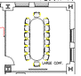
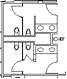
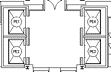

|
You are looking at an architectural floor plan of the building and floor indicated above the drawing.
Numbers in bold are the room numbers, as defined in the facilities database. Keep in mind
that not all rooms are obviously enclosed by walls or partitions. Sometimes an open area will be
separated into individual work areas, each with its own room number.
To help find your way around, look for some potential landmarks as defined below:

Conference rooms typically have a table surrounded by chairs, like the illustration to the right.
 Stairs are generally represented as illustrated to the right.
Stairs are generally represented as illustrated to the right.

Mens' and womens' restrooms usually look like the following:

Elevators may look like the drawing to the right.
With this information, click the following link to return to the floor plan and review the drawing to accurately select your location.
|